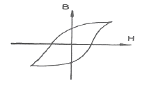
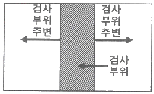

자기비파괴검사기사 (2019-08-04 기출문제)
1과목: 비파괴검사 개론
1. 레이저(laser)와 관계가 없는 비파괴검사법은?
- 광 홀로그램(Optical holograpy)
- 광탄성 피막 검사(Photoelastic coating test)
- 모아레 검사(Moire test)
- 보아스코프 검사(Borescope test)
(정답률: 70%)

2. 침투탐상제에 의한 누설검사에 대한 설명 중 틀린 것은?
- 누설 개소 확인이 용이하다.
- 가압장치 등 특수기구가 필요 없다.
- 시험체 두께어 구애받지 않는다.
- 누설검사 방법 중 가장 간단한 방법이다.
(정답률: 56%)
3. 누설검사의 목적과 거리가 먼 것은?
- 환경오염의 방지
- 용접부 내부의 융합불량 검출
- 가압이나 진공하의 유체를 포함한 시스템 관리
- 설비의 신뢰성 확보
(정답률: 69%)
4. 30mm 압연 강판에 존재하는 라미네이션을 검사할 때 가장 적절한 비파괴검사법은?
- 자동 방사선투과검사
- 자동 와전류탐상검사
- 자동 초음파탐상검사
- 질량분석 누설검사
(정답률: 72%)
5. 초음파가 A 매질에서 B 매질로 입사각이 8°로 입사할 때의 굴절각은? (단, A 매질의 종파속도는 1500 m/s 이고, B 매질에서 종파속도는 5000 m/s 이다.)
- 약 20°
- 약 28°
- 약 30°
- 약 38°
(정답률: 69%)
6. Ti 합금의 기본이 되는 합금형태가 아닌 것은?
- α형 합금
- β형 합금
- η형 합금
- (α+β)형 합금
(정답률: 75%)
7. 컵 앤 콘(Cup and Cone) 형상과 가장 관계있는 파괴는?
- 압축파괴
- 피로파괴
- 연성파괴
- 취성파괴
(정답률: 59%)
8. Sn-Sb-Cu계 합금(babbit matal)의 주용도는?
- 베어링용 합금
- 활자용 합금
- 땜납용 합금
- 저융점 합금
(정답률: 74%)
9. 6:4 황동에 주석을 첨가한 것으로 용접봉, 파이프 등으로 이용되는 것은?
- 네이벌 황동
- 하드 황동
- 알브랙 황동
- 애드미럴티 황동
(정답률: 74%)
10. 고속도 공구강의 기호로 옳은 것은?
- SM
- SPS
- STC
- SKH
(정답률: 63%)
11. 니켈 합금이 아닌 것은?
- 인코넬
- 퍼멀로이
- 모넬 메탈
- 화이트 메탈
(정답률: 53%)
12. Fe-Fe3C 상태도에서 공정 조직은?
- 페라이트
- 펄라이트
- 레데뷰라이트
- 오스테나이트
(정답률: 56%)
13. 용융점이 높아 용해가 곤란하여 주로 분말 야금법으로 성형하는 금속으로 고속도강의 첨가 원소로도 사용되는 것은?
- W
- Ag
- Au
- Cu
(정답률: 71%)
14. 열처리 후 최종 미세조직이 베이나이트인 열처리방법은?
- Martempering
- Austempering
- Ausforming
- Sperodizing
(정답률: 63%)
15. 표점거리가 50mm, 직경이 5mm인 봉재 시편을 인장한 결과, 표점거리가 55mm 가 되었고 인장강도는 1400 MPa로 측정되었다. 이 때, 인장시험에서 최대 하중은 약 몇 kN 인가?
- 25
- 27.5
- 30
- 32.5
(정답률: 62%)
16. 일반적인 용접의 특징으로 옳은 것은?
- 용접하려는 재료의 두께 제한이 있고, 보수와 수리가 곤란하다.
- 용접부에 변형 및 잔류응력이 발생하고 저온취성이 생길 우려가 있다.
- 큰 소음이 발생하여 실내에서 작업이 곤란하고 복잡한 구조물 제작이 어렵다.
- 용접사의 기량에 관계없이 균일한 제품을 얻을 수 있고, 용접부의 품질 검사가 용이하다.
(정답률: 72%)
17. 용접기의 아크 발생 시간이 7분, 아크 발생 정지 시간이 3분일 경우 용접기의 사용률은 몇 % 인가?
- 30
- 50
- 70
- 100
(정답률: 78%)
18. 모재의 재질결함으로써 강괴일 때 기포가 압연되어 생기는 설퍼 밴드(sulfur band)와 같이 층상으로 편재해 있어 강재의 내부에 노치를 형성한 균열은?
- 종 균열
- 크레이터 균열
- 마이크로 균열
- 라미네이션 균열
(정답률: 72%)
19. 전기가 필요 없고, 레일의 접합, 차축, 선박의 프레임(stern-frame) 등 비교적 큰 단면을 가진 주조나 단조품의 맞대기 용접과 보수용접에 사용되는 용접법은?
- 테르밋 용접
- 레이저 용접
- 전자 빔 용접
- 피복 아크 용접
(정답률: 77%)
20. 용접부 결함은 치수상의 결함, 구조상의 결함, 성질상의 결함으로 구분할 수 있다. 다음 중 구조상의 결함에 속하지 않는 것은?
- 기공
- 변형
- 오버랩
- 언더컷
(정답률: 66%)
2과목: 자기탐상검사 원리
21. 자계의 세기가 1000 A/m에서 자속밀도 0.1 Wb/m2 인 자성체의 투자율[H/m]은?
- 10-3
- 10-4
- 103
- 104
(정답률: 74%)
22. 직경이 3인치이고 길이가 9인치인 강자성 시험체를 코일법으로 자기탐상시험할 때 코일을 3회 감는다면 필요한 전류[A]는?
- 2000
- 3500
- 5000
- 7000
(정답률: 80%)
23. 지름 20mm, 길이 300mm 환봉의 자분탐상검사를 위한 자화 방법의 조합으로 가장 적합한 것은?
- 전류관통법, 코일법
- 축통전, 코일법
- 극간법, 코일법
- 축통전, 직각통전법
(정답률: 65%)
24. A형 표준시험편의 설명으로 옳은 것은?
- A1형은 압연으로 성형한 것이다.
- A2형은 자성의 이방성 때문에 원형홈은 없다.
- 동일한 분자/분모의 번호에서 원형이 직선형보다 높은 자계를 필요로 한다.
- 자분의 적용방벙븐 잔류법 또는 연속법 어느 것을 사용하여도 무방하다.
(정답률: 57%)
25. 자분탐상검사로 검사체의 표면하 결함을 탐상하고자 한다. 다음 중 가장 적당한 자화전류와 자분은?
- 반파직류와 습식자분 적용
- 반파직류와 건식자분 적용
- 교류와 건식자분 적용
- 교류와 습식자분 적용
(정답률: 66%)
26. 석유저장 탱크나 구형 탱크와 같은 대형구조물의 용접부 균열 등의 불연속을 탐상하기 위하여 널리 사용되는 자분탐상검사방법은?
- 축통전법
- 코일법
- 극간법
- 중심도체법
(정답률: 81%)
27. 진공보다 낮은 투자율을 가지는 물질을 나타내는 용어는?
- 반자성체(diamagnetic substance)
- 상자성체(paramagnetic substance)
- 강자성체(ferromagnetic substance)
- 자성체(magnetic substance)
(정답률: 82%)
28. 그림과 같이 자기이력곡선상 넓은 루프(Loop)를 가지는 재료는 어떤 성질을 가지는가?

- 항자력이 적다.
- 리액턴스(Reactance)가 적다.
- 잔류자기가 적다.
- 투자율이 적다.
(정답률: 54%)
29. 전류계를 교정할 때 실제 전류값과 표준계기와의 허용되는 오차 범위의 한계는?
- ±1%
- ±3%
- ±5%
- ±10%
(정답률: 56%)
30. 자분에 의한 지시모양의 식별성을 향상시키기 위해 고려해야 할 사항이 아닌 것은?
- 적정한 자화를 하여 결함으로부터 충분한 누설자속을 얻도록 한다.
- 적정 자분을 적용한다.
- 흡착성 및 식별성이 우수한 자분을 사용한다.
- 착색제나 형광제의 비중이 높은 자분을 사용한다.
(정답률: 81%)
31. 중심도체법으로 파이프를 자기탐상시험할 때 자장의 강도가 가장 센 곳은?
- 파이프 외면
- 파이프 내면
- 파이프 끝
- 파이프 벽의 가운데
(정답률: 86%)
32. 자분탐상시험 시 일반적으로 직류로 검사할 때 나타난 지시가 표면 결함인지 표한하 결함인지를 확인하기 위한 다음 단계의 일은?
- 직류전류의 크기를 1/10로 줄여서 재검사한다.
- 교류로 재검사한다.
- 탈자 후 자분을 적용한다.
- 충격 전류로 재검사한다.
(정답률: 86%)
33. 영구자석으로 알려진 가장 작은 것을 무엇이라 하는가?
- 격자구조(lattice structure)
- 세포(cell)
- 자구(domain)
- 프레네터리 스핀(planetary spin)
(정답률: 74%)
34. 침투 깊이에 영향을 미치는 인자가 아닌 것은?
- 전류의 주파수
- 재료의 온도
- 재료의 투자율
- 재료의 전기 전도도
(정답률: 66%)
35. 강자성체를 선형 자화시키는 경우 반자계가 발생한다. 반자계 강도를 감소시키는 방법이 아닌 것은?
- 강자성체의 자화 강도를 강하게 한다.
- 강자성체의 길이를 증가시킨다.
- 강자성체에 이음철봉을 연결한다.
- 강자성체의 길이대 직경(L/D) 비를 증가시칸다.
(정답률: 55%)
36. 투자율에 대한 설명으로 옳은 것은?
- 재료 투자율 : 자력이 제품에 없을 때와 동일한 점에서 측정될 때의 투자율
- 실효 투자율 : 500~2000(또는 그 이상) gauss/oersted 의 범위
- 최대 투자율 : 자력선 노정(Flux path)이 재료 내에 존재할 때의 투자율
- 초기 투자율 : 자속밀도와 자력이 ZERO에 접근했을 때 나타나는 투자율
(정답률: 67%)
37. 건식법에 의한 자분탐상시험의 설명으로 잘못된 것은?
- 자분 및 검사면이 충분히 건조되어 있어야 한다.
- 습식법에 비하여 표면결합의 검출 능력이 우수하다.
- 극단적으로 거친면 및 고온부 탐상에 적합하다.
- 자분적용 시 자분을 포대에 넣고 손으로 포대를 살살 쳐서 뿌려도 된다.
(정답률: 80%)
38. 탈자를 할 필요가 없는 경우는?
- 잔류 자속이 이후 기계가공에 영향을 미치는 경우
- 잔류자속이 계측기에 악영향을 미칠경우
- 초기 시험보다 낮은 전류치로 재검사하는 경우
- 검사 후 큐리온도 이상으로 열처리하는 경우
(정답률: 82%)
39. 자계의 세기(H)를 나타내는 단위는?
- Volt/m
- Coulomb/m2
- N/Wb
- Weber/m2
(정답률: 58%)
40. 자분모양의 식별성에 영향을 미치는 인지가 아닌 것은?
- 결함부에서의 누설자속 강도
- 적절한 관찰조건
- 검사 대상물의 크기
- 자분의 흡착성
(정답률: 91%)
3과목: 자기탐상검사 시험
41. 자분탐상검사에서 대형 구조물의 용접부위를 극간법으로 탐상하는 이유는?
- 교류는 탈자하지 않아도 된다.
- 부분검사와 휴대성이 좋다.
- 전류값의 조정이 용이하다.
- 전처리가 필요 없다.
(정답률: 84%)
42. 자분탐상검사에서 자분에 대한 설명으로 틀린 것은?
- 사용중인 자분을 점검하는 경우 사용 중의 자분을 소량 채취하여 상태를 점검해야 한다.
- 자분 성능점검을 위한 표준품은 공인기관에서 제공하는 것만을 사용해야 한다.
- 자분의 성능점검은 표준품과 비교하는 것이 정확하다.
- 보관중이 자분을 점검하는 경우 보관 중의 자분을 소량 채취하여 상태를 점검해야 한다.
(정답률: 68%)
43. 선형자계에 의해 시험체를 자화시키는 방법은?
- 코일법
- 축통전법
- 전류관통법
- 자속관통법
(정답률: 80%)
44. 자분탐상검사에서 직접 접촉법에 의한 자화방법으로 옳은 것은?
- 전류관통법
- 축통전법
- 코일법
- 자속관통법
(정답률: 70%)
45. 자분탐상검사법 중 유도전류를 이용하는 방법에 관한 설명으로 옳은 것은?
- 전기적인 접촉없이 링(ring)형태의 시험체에 선형자장을 형성시키는 방법이다.
- 링 형태의 시험체 안에 평평한 형태의 연철을 넣어 자장을 확대할 수 있다.
- 잔류자기법으로 검사하는 경우에는 자화전류로 교류를 사용하는 것이 효과적이다.
- 검사체에 관통하는 철심은 가능한 얇은 것을 사용한다.
(정답률: 48%)
46. 자분탐상검사에서 전자유도를 이용하여 검사체에 유도전류를 발생시킴에 따라 검사체에 자계를 형성하는 방법은?
- 축통전법
- 직각통전법
- 관통법
- 자속관통법
(정답률: 79%)
47. 자분탐상검사에서 축통전법으로 잘 검출되는 결함은?
- 전류의 흐름과 직각방향으로 있는 내부 결함
- 전류와 45° 방향을 갖는 내부 결함
- 전류와 45° 방향을 갖는 표면 결함
- 전류의 흐름과 평행한 표면 결함
(정답률: 47%)
48. 탄소함유량이 높은 공구강과 스프링강 등 보자력이 높고, 특히 나사부 등 복잡한 형상부에 적용되는 자분탐상검사 방법은?
- 연속법
- 잔류법
- 직각통전법
- 전류관통법
(정답률: 69%)
49. 자분탐상검사에서 속이 빈 실린더형의 내경 표면을 자화하는 방법은?
- 축방향으로 자화한다.
- 양 끝에 프로드를 놓고 자화한다.
- 중심도체를 내경 속에 놓고 자화한다.
- 실린더를 솔레노이드속에 직교되게 놓고 자화한다.
(정답률: 81%)
50. 자분탐상검사에서 시험기록의 표기방법이 옳은 것은?
- EA ~ 2000 : 전류관통법, 2000 A의 직류전류 사용
- C ∧ 3000 : 축통전법, 3000 A의 교류전류 사용
- P – 1,500 Ⓓ : 프로드법, 1500 A의 직류전류 사용, 탈자실시
- I ∧ 2000 : 코일법, 2000 A의 충격전류 사용, 탈자실시
(정답률: 80%)
51. 누설자속 탐상검사를 할 때 누설자속을 검출하는 센서로 사용하지 않는 것은?
- 홀 소자
- 압전 소자
- 자기 다이오드
- 자기 저항효과 소자
(정답률: 62%)
52. 자분탐상검사에 대한 설명으로 옳은 것은?
- 자속관통법에서 연속법으로 하려면 직류를 사용해야 한다.
- 충격전류는 연속법인 경우에 한하여 사용한다.
- 자기펜 흔적은 잔류법으로 검사하면 발생하지 않는다.
- 잔류법을 적용할 때에는 직류전류를 사용한다.
(정답률: 44%)
53. 자분탐상검사에서 극간법에 대한 설명으로 틀린 것은?
- 선형자계를 형성한다.
- 현장 이동성이 양호하다.
- 영구자석을 이용할 수 있다.
- 자속밀도를 쉽게 변화시킬 수 있다.
(정답률: 75%)
54. 자분탐상검사의 자분지시모양에 대한 설명으로 틀린 것은?
- 투자율이 다른 재질경계지시의 경우 시험품을 탈자하고 재자화하여 검사액을 적용하면 나타나지 않는다.
- 자기펜 흔적의 경우 시험품을 탈자하고 재자화하여 검사액을 적용하면 나타나지 않는다.
- 단면급변지시의 경우 자화 정도를 약하게 하든가 잔류법으로 시험하면 나타나지 않는다.
- 자극지시, 전극지시 및 전류지시의 경우 자극의 위치, 전극의 위치 또는 자화케이블의 접촉위치를 바꾸어 재자화하면 나타나지 않는다.
(정답률: 68%)
55. 자분탐상검사에서 자분에 대한 설명 중 틀린 것은?
- 자분의 색조와 휘도는 시험면과 비교하여 높은 콘트라스트를 갖고 있으면 좋다.
- 자분에 부착된 착색제가 적을수록 자기적 성질이 향상되며, 결합부의 흡착성이 좋아진다.
- 일반적으로 큰 결함에는 큰 입도의 자분이 좋고 미세한 결함에는 작은 입도의 자분이 좋다.
- 일반적으로 투자율이 낮고 보자력이 큰 것이 좋다.
(정답률: 70%)
56. 코일법에서 시험체의 직경이 2인치, 길이가 10인치이고 코일의 권수가 5일 때 AT값은?(오류 신고가 접수된 문제입니다. 반드시 정답과 해설을 확인하시기 바랍니다.)
- 5000
- 1400
- 2000
- 8000
(정답률: 72%)
57. 자분탐상검사에서 자분모양의 관찰에 대한 설명으로 옳은 것은?
- 가급적 관찰면에 대하여 수직인 상태의 시각으로 관찰한다.
- 잔류법 적용 시는 형광자분의 양을 규정 이상으로 높여 관찰한다.
- 연속법 적용 시는 자화를 정지한 후 자분을 적용하여 관찰한다.
- 조사광이 관찰면에 대하여 반사광이 있는 위치와 각도에서 관찰한다.
(정답률: 77%)
58. 자분탐상검사에서 베어링볼을 가장 효과적으로 검사할 수 있는 방법은?
- 코일법(두 방향)
- X, Y, Z축에서 각각 검사
- 프로드법(두 방향)
- 평면만 적용 검사
(정답률: 90%)
59. 자분탐상검사에서 강관의 원주방향 결함을 검출하기 위한 올바른 자화 방법은?
- 극간법을 사용하여 원주방향으로 자화한다.
- 코일법을 사용하여 원주방향으로 자화한다.
- 극간법을 사용하여 축방향으로 자화한다.
- 코일법을 사용하여 축방향으로 자화한다.
(정답률: 32%)
60. 봉형 비자성체에 직류전류가 흐를 때에 대한 설명 중 틀린 것은?
- 자계의 세기는 봉의 외부 표면에서 최대가 된다.
- 외부 표면에서의 자계의 세기는 봉의 반지름이 증가할수록 감소한다.
- 전류값이 2배가 되면 자계의 세기는 4배가 된다.
- 봉재 외부의 자계의 세기는 봉의 중심으로부터의 거리에 멀어지면 감소한다.
(정답률: 59%)
4과목: 자기탐상검사 규격
61. 강자성 재료의 자분탐상검사 방법 및 자분 모양의 분류(KS D 0213)에 규정된 자화전류의 종류 및 특성에 대한 설명으로 옳은 것은?
- 맥류는 그것에 포함되는 교류성분이 큰 만큼 내부 흠의 검출성능이 높다.
- 직류 및 맥류를 사용하여 자화하는 경우에는 표면 흠 및 표면근접의 내부의 흥믈 검출할 수 없다.
- 교류는 표피효과의 영향에 의해 표면 아래의 자화는 직류와 비교하여 약하다.
- 교류를 사용하여 자화하는 경우는 원칙적으로 잔류법에 한한다.
(정답률: 70%)
62. 보일러 및 압력용기에 대한 자분탐상검사(ASME Sec.V Art.7)에서 얼마 이하로는 프로드 간격을 좁히지 못하도록 하는가?
- 1인치
- 2인치
- 3인치
- 4인치
(정답률: 64%)
63. 강자성 재료의 자분탐상검사 방법 및 자분 모양의 분류(KS D 0213)에서 지시모양이 분류에서 흠의 크기가 5mm이고, 5개의 흠이 일직선상에 있으며, 흠의 간격이 순서대로 0.9mm, 1.9mm, 2.9mm, 3.9mm 일 때 흠의 전체길이는?
- 25.0 mm
- 25.9 mm
- 27.8 mm
- 34.6 mm
(정답률: 75%)
64. 보일러 및 압력용기에 대한 자분탐상검사(ASME Sec.V Art.7)에 따른 자분탐상시험에서 사용되는 케토스링 시험편에 가공된 깊이가 다른 홀의 수는?
- 6
- 9
- 12
- 15
(정답률: 72%)
65. 보일러 및 압력용기에 대한 자분탐상검사(ASME Sec.V Art.7)에 따라 탐상 실시 전에 검사부위 및 검사 부위 주변을 얼마까지 전처리하여야 하는가?

- 0.5인치(12.5mm)
- 1인치(25mm)
- 1.5인치(38mm)
- 2인치(51mm)
(정답률: 82%)
66. 보일러 및 압력용기에 대한 자분탐상검사(ASME Sec.V Art.7)에 의한 프로드(Prod)법 등의 경우 전극 부근의 전류밀도가 높기 때문에 생기는 누설자속에 의해 형성되는 지시는?
- 전류지시
- 전극지시
- 자극지시
- 재질경계지시
(정답률: 64%)
67. 보일러 및 압력용기에 대한 표준자분탐상검사(ASME Sec.V Art.25 SE-709)에 따른 자분탐상시험에서 건식자분을 사용하여 시험할 때 열에 견딜 수 있는 자분의 최대 온도 규정은?
- 115 ℃
- 215 ℃
- 315 ℃
- 515 ℃
(정답률: 74%)
68. 강자성 재료의 자분탐상검사 방법 및 자분 모양의 분류(KS D 0213)규격에 따라 자분탐상시험을 실시한 후 작성한 검사 기록 중 EA~2000의 설명으로 올바른 것은?
- 국간법으로 직류 2000 A 흐르게 한다.
- 축통전법으로 교류 2000 A 흐르게 한다.
- 전류 관통법으로 교류 2000 A 흐르게 한다.
- 직각통전법으로 교류 2000 A 흐르게 한다.
(정답률: 63%)
69. 비파괴검사-자분탐상검사-제1부 : 일반원리(KS B ISO 9934-1)의 적용범위는?
- 주로 검사체의 기공 검출
- 주로 금속 개재물 검출
- 주로 용입불량 검출
- 주로 표면 균열 검출
(정답률: 82%)
70. 비파괴검사-자분탐상검사-제1부 : 일반원리(KS B ISO 9934-1)에서 규정하는 표면준비에 대한 요구사항으로 틀린 것은?
- 검사체 표면에 스케일을 제외한 먼지, 뜬 녹 등을 제거해야 한다.
- 검사체 표면에 용접 스패터, 그리스, 기름 등 이물질이 없어야 한다.
- 검사체 표면은 관련지시와 거짓지시가 명확히 구분될 수 있어야 한다.
- 검사체 표면에 고착된 페인트 등 이물질이 없어야 한다.
(정답률: 58%)
71. 강자성 재료의 자분탐상검사 방법 및 자분 모양의 분류(KS D 0213)에 따른 자분모양의 분류에 있어 해당되지 않는 자분모양은?
- 균열에 의한 자분모양
- 독립한 선상의 자분모양
- 독립한 원형상의 자분모양
- 용입불량, 융합불량에 의한 자분모양
(정답률: 81%)
72. 강자성 재료의 자분탐상검사 방법 및 자분 모양의 분류(KS D 0213)에 규정된 대비시험편은?
- A1형 시험편
- C형 시험편
- A2형 시험편
- B형 시험편
(정답률: 64%)
73. 강자성 재료의 자분탐상검사 방법 및 자분 모양의 분류(KS D 0213)의 탐상시험 전처리에 관한 내용 중 틀린 것은?
- 전처리 범위는 시험범위보다 넓어야 한다.
- 용접부의 경우 시험범위에서 모재측으로 약 20mm 넓게 잡는 것을 원칙으로 한다.
- 전극에는 도체 패드 부착을 피해야 한다.
- 검사품은 원칙적으로 단일 부품으로 분해한다.
(정답률: 84%)
74. 보일러 및 압력용기에 대한 자분탐상검사(ASME Sec.V Art.7)에 따라 직경 4인치 봉을 원형자화(축통전)법으로 자화시킬 경우 직류로 표면불연속을 검출하고자 한다. 이때의 적정 전류(A)에 해당하는 것은?
- 400
- 800
- 1600
- 3600
(정답률: 42%)
75. 강자성 재료의 자분탐상검사 방법 및 자분 모양의 분류(KS D 0213)에서 A형 표준시험편 중 판의 두께에 비해 인공흠의 깊이 비가 가장 작은 것은?
- A1-7/50
- A1-15/50
- A1-15/100
- A1-30/100
(정답률: 55%)
76. 강자성 재료의 자분탐상검사 방법 및 자분 모양의 분류(KS D 0213)를 적용하여 전류관통법으로 여러 개의 검사체를 동시에 검사할 때 고려할 사항으로 틀린 것은?
- 자계강도는 도체 중심에서의 반지름에 반비례한다.
- 반자계의 영향을 가능한 한 적게 한다.
- 잔류법인 경우 자기 펜 자국이 생기지 않도록 주의한다.
- 자계강도는 도체 외각에서의 반지름에 비례한다.
(정답률: 71%)
77. 보일러 및 압력용기에 대한 자분탐상검사(ASME Sec.V Art.7)에서 형광자분탐상 시 자외선강도는 시험표면에서 최소 얼마 이상이어야 한다고 규정하고 있는가?
- 1000 W/m2
- 1000 μW/cm2
- 1000 μW/m2
- 1000 μW/mm2
(정답률: 85%)
78. 보일러 및 압력용기에 대한 표준자분탐상검사(ASME Sec.V Art.25 SE-709)에서 건식자분에 의한 탐상 결과, 표며직하 불연속의 원인으로 형성된 자분모양은 표면 불연속의 자분 모양과 비교하여 일반적으로 어떤 형태를 나타내는가?
- 의사모양으로 나타난다.
- 자분모양에 전혀 차이가 없다.
- 희미한 자분모양으로 나타난다.
- 더 선명한 자분모양으로 나타난다.
(정답률: 76%)
79. 강자성 재료의 자분탐상검사 방법 및 자분 모양의 분류(KS D 0213)규격에서의 자분모양의 분류에 관한 설명으로 잘못된 것은?
- 독립한 자분모양은 선상자분모양, 원형상자분모양으로 나눈다.
- 자분모양에서 그 길이가 나비의 5배 이상인 것을 선상 자분모양이라 한다.
- 연속한 자분모양은 거의 동일 직선상에 서로의 거리가 2mm 이하 연속 존재하는 것을 말한다.
- 분산한 자분 모양은 일정한 면적내에 여러 개의 자분 모양이 분산하여 존재하는 것을 말한다.
(정답률: 84%)
80. 보일러 및 압력용기에 대한 자분탐상검사(ASME Sec.V Art.7)에서 요구되는 시험체 두께가 19mm(3/4인치) 이상일 때 프로드 간격 1인치당 필요 암페어의 범위로 옳은 것은?
- 90 ~ 100 A
- 100 ~ 125 A
- 125 ~ 150 A
- 150 ~ 200 A
(정답률: 73%)